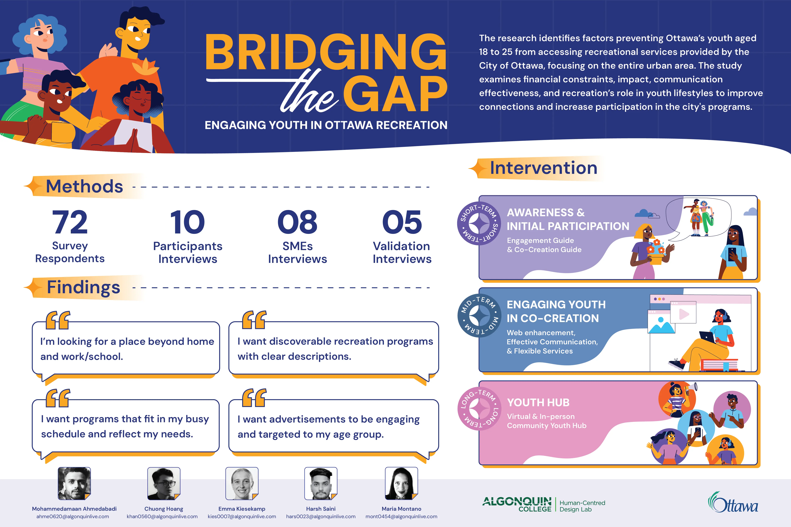
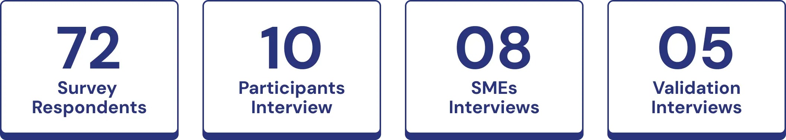
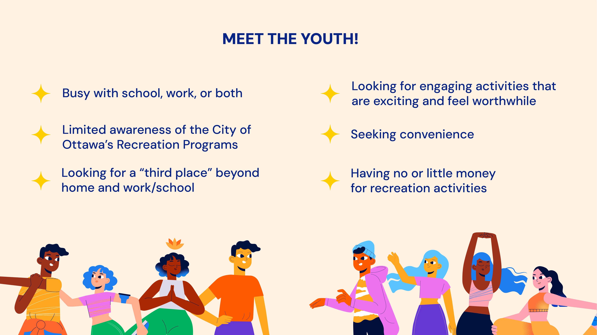
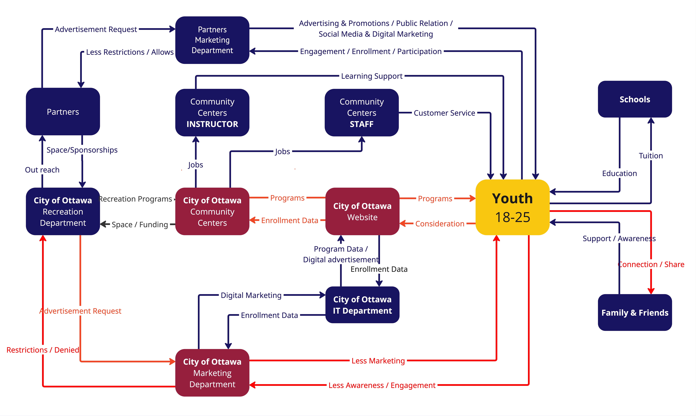
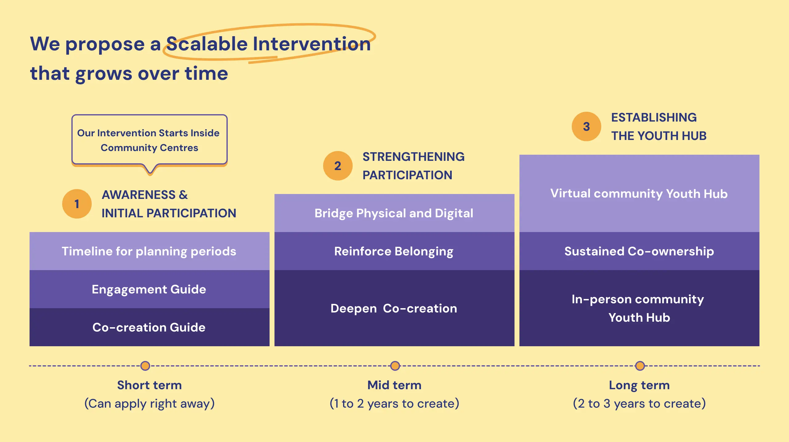
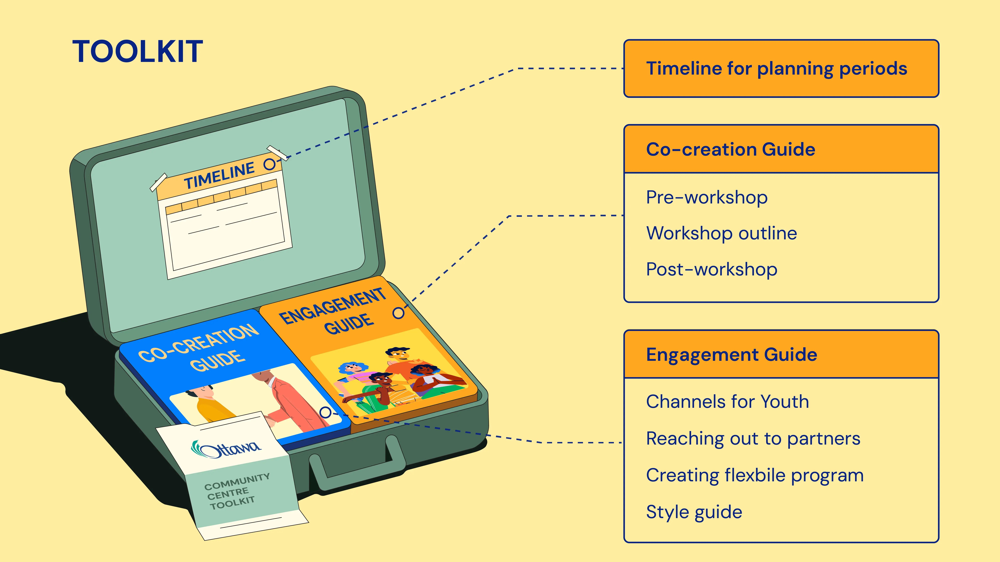

Bridging the Gap: Engage Urban Youth in Ottawa Recreation
ROLE:
UX Researcher
TIMELINE:
8 months - From September 2024 to April, 2025
DELIVERABLES:
Research findings and service design solutions
PROJECT OVERVIEW:
The City of Ottawa has raised concerns about the low participation of youth in its recreational programs. To investigate this issue, this study explored the barriers preventing youth aged 18–25 in five priority Ottawa neighbourhoods from engaging with city-run recreation programs. Our findings reveal three primary challenges: a lack of accessible and affordable recreational spaces, a lack of flexibility in programming, and ineffective communication strategies. In response, this research introduces a three-phase intervention aimed at improving engagement. It includes immediate tools to support program design and outreach, collaborative strategies to involve youth in shaping services, and a long-term vision to create dedicated youth hubs that foster connection and belonging. The project was conducted collaboratively by Chuong Hoang, Emma Kiesekamp, Maria Montano, Amaan Ahmedabadi, and Harsh Saini.
Visual Summary of Research Study
1. Why do we start this project?
In September 2024, Brent McQueen, Molly Cook, and Carlos Ramos from the Recreation, Cultural and Facility Services (RCFS) of the City of Ottawa expressed concerns about the youth who are not actively participating in recreational activities provided by the city in their community centres.
This research focuses on youth in five urban neighbourhoods of Ottawa: Britannia, Carlington, Lower Town, Overbrook, and Sandy Hill. These neighbourhoods are considered high priority because the gap between youth and recreation programs is larger than in other neighbourhoods in the urban areas according to our client. According to Neighbourhood Maps, post-secondary institutions are either located within or near the five targeted neighbourhoods. Additionally, these areas host a significant number of newcomers.
This study focuses on youth aged 18 to 25, regardless of their enrolment status in a post-secondary institution. This age range is defined by two criteria: it aligns with the typical age of youth attending post-secondary institutions, and it reflects the age groupings used by the City of Ottawa for organizing its programs.
What's next...
A follow-up literature review highlighted the relationship between newcomers to Canada and recreation spaces/programs. For instance, while many newcomers to Canada are eager to participate in sports and physical activities, they often encounter unique challenges, particularly with time and cost. This is especially true during their first few years when their focus is usually on securing a job, finding housing, and settling into their new environment (ParticipACTION, 2022). Additionally, Charles-Rodriguez & Larouche (2024) found that immigrants participated in fewer types of outdoor recreation activities than Canadian-born individuals. The study also showed that immigrants who did more outdoor recreation activities felt a stronger sense of belonging and were more satisfied with life in Canada. However, the authors warned that recreation programs should not be one-size-fits-all, as some immigrants may feel nostalgic, disconnected, or uprooted.
Research goals and objectives
The goal of this study is to examine the factors that discourage youth aged 18 to 25 from enrolling in municipal recreation programs. Additionally, it will assess how the City of Ottawa engages with youth and communicates relevant program information effectively. Finally, the study will explore the impact of recreation programs on youth development.
Drawing on the research outlined above, the research question to be investigated is: What factors facilitate an interactive and social experience amongst urban youth?
In doing so, the research objectives are to:
- Explore if the current communication channels resonate with post-secondary youth.
- Understand what youth are looking for when it comes to organized recreation/leisure activities.
- Explore the values youth desire from recreational activities to help positively impact their lives.
- Understand the extent to which financial barriers influence youth participation in recreational activities.
- Understand how leisure activities fall into youths' lifestyles.
2. Research Methodology
A mixed-methods approach was used to collect both qualitative and quantitative data from youth aged 18 to 25 residing in urban Ottawa. The study was divided into three phases to obtain the data:
- Phase 1: A screener survey
- Phase 2: Semi-structured interviews with youth participants and Subject Matter Experts (SMEs).
- Phase 3: Design validation interviews with youth and SMEs.
Descriptive statistical methods were used to identify key trends and patterns from quantitative data. Qualitative data were thematically coded and visually organised on Miro to analyze and identify themes and insights.
3. Findings
Through our research, which included 72 surveys and 10 participant interviews, along with 8 SME additional interviews, we identified key pain points experienced by our users. This helped us gain a better understanding of how recreation fits into their lives. By using the persona outlined below, we gained valuable insights into their needs and were able to empathize more deeply with their experiences.
Persona of the youth
Factors hinder youth's participation
Our findings revealed three major gaps between the city and its youth:
- Social Spaces: Many recreational spaces are not easily accessible or budget-friendly, making participation difficult.
- Flexibility: Youth often have unpredictable schedules due to school and work. Programs that lack flexibility create barriers to participation.
- Awareness: There is limited awareness of available programs. Youth mainly rely on social media and word-of-mouth, yet current outreach strategies don’t effectively use these channels.
4. Intervention
Based on the insights and from our system map analysis, we identified that the most immediate and effective solution lies in reimagining the role of community centers—the key touchpoints between youth and the city’s recreational services. Our research highlighted the dedication and enthusiasm of community center staff, revealing a powerful opportunity to support and empower them in creating more engaging, youth-focused experiences.
System map illustrating the principal actors and their relationships. Pain points to be improved are highlighted in red
A Scalable Three-Phase Intervention Framework
Our proposed solution is a scalable, three-phase approach designed for long-term impact. It empowers community centers to better engage youth through co-creation, active participation, and the cultivation of a strong sense of belonging. Each phase builds on the previous to ensure sustainable growth and deeper connections between youth and the city’s recreational spaces—both physical and digital. The journey begins by raising awareness and boosting initial participation and culminates in the creation of a hybrid community hub that serves as a true Third Place: a welcoming environment beyond school and work where young people can connect, engage, and thrive.
The three phases of the solution are described below:
Phase 1: Awareness & Co-Creation
The first phase begins with the implementation of a practical and adaptable Youth Engagement Toolkit, designed to equip community centers with the tools they need to meaningfully connect with youth and co-create relevant recreational offerings. The toolkit includes three core components:
- Scheduling & Planning Guide: A customizable planning calendar that helps each facility align staff efforts and organize seasonal programming activities efficiently and strategically.
- Co-Creation Guide: A step-by-step guide for designing and facilitating co-creation workshops with youth, focusing on inclusive practices, meaningful participation, and collaborative decision-making.
- Engagement Guide: This section outlines how to design compelling campaigns, select the right communication channels, and build partnerships to effectively promote the new youth-driven programs.
This phase allows each community center to adapt the toolkit to its specific context, creating a structure that encourages active youth participation in shaping the seasonal recreational offerings tailored to their needs and preferences.
Phase 2: Strengthening Participation
As co-creation initiatives gain momentum, the youth engagement group grows stronger, inviting more young people to get involved. In this phase, the scope of collaboration expands beyond programming. Youth begin to contribute ideas for improvements to infrastructure, equipment, virtual platforms, and communication strategies within their community centres.
The result is a deeper sense of ownership and social connection, where youth not only participate in programs but also influence the direction of their development. This inclusive and responsive approach encourages older youth (18–25) to serve as role models and catalysts for engaging younger audiences, fostering an intergenerational culture of participation and empowerment.
Additionally, this phase emphasizes upgrading the digital platform, ensuring that program information is accessible, relevant, and aligned with how youth prefer to discover and engage with recreational opportunities.
Phase 3: Establishing the Youth Hub
The final phase establishes a true “Third Place” for youth in Ottawa—a space that exists beyond home and school/work, where young people feel welcomed, seen, and connected. Each community center becomes a recognizable spot in the city where youth feel a strong sense of belonging, supported by a physical environment shaped by their input.
This experience is enhanced by a dedicated digital space on the city’s recreation platform, where youth can create groups, share stories, organize activities, and showcase their community impact. It becomes more than a place to sign up for programs—it’s a living hub of connection, creativity, and community that supports ongoing engagement and visibility for youth voices.
The following link provides a detailed description of the toolkit guide and its potential for scalability: View Youth Hub Framework
5. Limitations
The main constraint within this research was the researchers' inability to conduct interviews with participants who took part in the City of Ottawa recreational programs. Advisors who have experience with the City of Ottawa recreational programs could supply beneficial guidance about program-specific obstacles and thus expand research depth. The brief collection period and narrow scope of the study limited researchers from conducting an extensive analysis.
Future researchers should study how web interface design and workflow functionality affect user engagement and experience. Research into "third places" as informal public spaces away from home and work could help understand how to build community ties and improve urban social health. Future research should concentrate on studying these regions because they provide substantial opportunities for study and progress.
6. Learnings
This research study was my first experience conducting an end-to-end research process, and it provided a clear understanding of how to move from vague problem areas to actionable design solutions. I learned how to plan a research study in alignment with Research and Ethics Board (REB) guidelines, ensuring ethical and responsible practices throughout. I gained experience conducting both surveys and interviews, engaging not only with participants but also with Subject Matter Experts (SMEs) to collect diverse and meaningful data. Additionally, I developed skills in scheduling and coordinating interviews efficiently, which contributed to a smooth data collection process. Throughout the project, I regularly presented research progress, findings, and proposed solutions to clients, which helped build confidence in sharing insights clearly and persuasively. Most importantly, I learned how to design service design interventions based on research insights to effectively address complex problems.